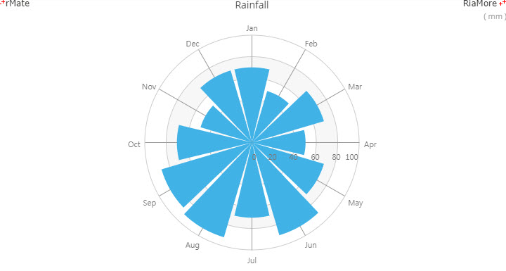
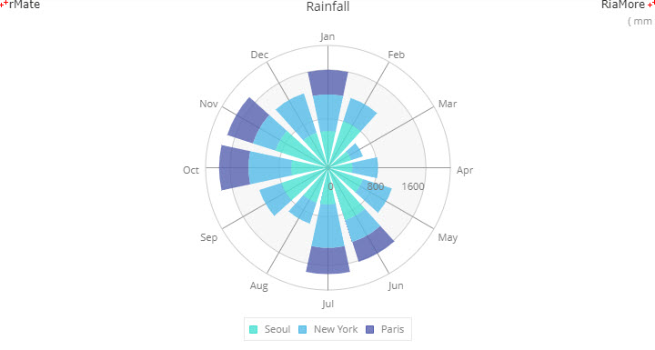

윈드로즈 차트
윈드로즈 차트는 특정 위치에서 바람의 방향과 속도의 크기를 시간별로 간결하게 표현하는 용도로 개발된 차트입니다.
최근에는 다양한 용도로 활용되는 폴라 차트(Polar Chart)의 한 유형이며, 일반적으로 8 ~ 16 개의 방사형 바퀴살을 한 차트에 표현하는 것이 적절합니다.
여러 개의 데이터 시리즈가 레이아웃에 정의되면 스택 형태의 방사형 바퀴살로 표현됩니다.
다음은 월별 강수량을 윈드로즈 차트로 표현하는 코드와 이를 적용해서 출력한 차트의 예제입니다.
<WindRoseChart showDataTips="true" dataTipDisplayMode="mouse" roseRatio="0.9">
<angularAxis>
<CategoryAxis id="aAxis" categoryField="Month"/>
</angularAxis>
<radialAxis>
<LinearAxis id="rAxis"/>
</radialAxis>
<radialAxisRenderers>
<Axis2DRenderer axis="{aAxis}"/>
</radialAxisRenderers>
<series>
<WindRoseSeries field="Vancouver" displayName="Vancouver">
<showDataEffect>
<SeriesZoom duration="1000"/>
</showDataEffect>
</WindRoseSeries>
</series>
</WindRoseChart>

See the CodePen 알메이트 차트 - 윈드로즈 차트
스택 윈드로즈 차트
윈드로즈 차트 생성을 위한 레이아웃에 하나 이상의 데이터 시리즈를 정의할 경우, 스택 형태로 표현됩니다.
다음은 이에 대한 코드와 이를 적용해서 출력한 차트의 예제입니다.
이 예제에서는 3 개의 데이터 시리즈가 정의되었고, 각 데이터 시리즈에 대한 색(color)과 투명도(alpha = “0.8”)가 <SolidColor> 노드에 설정되었습니다.
<WindRoseChart showDataTips="true" dataTipDisplayMode="mouse" paddingBottom="30">
...
<series>
<WindRoseSeries field="Seoul" displayName="Seoul">
<fill>
<SolidColor color="#49e1d2" alpha="0.8"/>
</fill>
</WindRoseSeries>
<WindRoseSeries field="NewYork" displayName="New York">
<fill>
<SolidColor color="#54bbe8" alpha="0.8"/>
</fill>
</WindRoseSeries>
<WindRoseSeries field="Paris" displayName="Paris">
<fill>
<SolidColor color="#5560af" alpha="0.8"/>
</fill>
</WindRoseSeries>
</series>
</WindRoseChart>

See the CodePen 알메이트 차트 - 스택 윈드로즈 차트